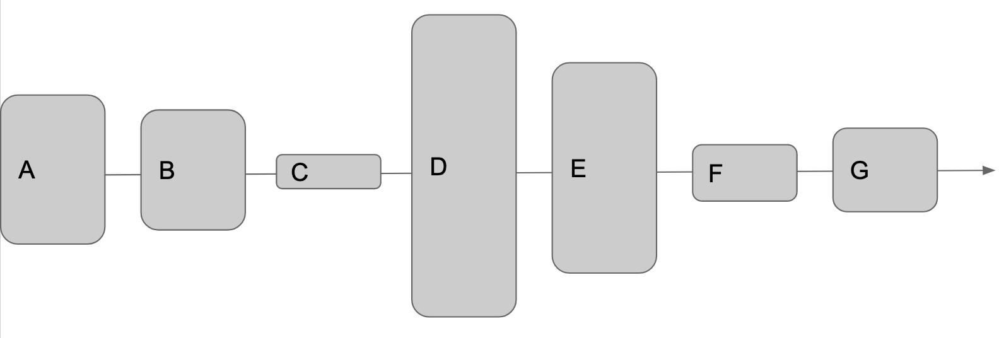
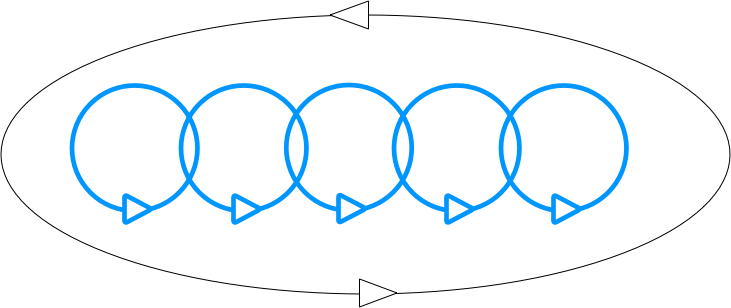

How much stuff does this system produce?
I think we can do better. But how?
Articulate the problem. Seriously, just write it down & read it back to yourself.
Is it the bottleneck?
Yes: Break it down into its constituent parts & repeat Step 1.
No: Stop.
Improve the bottleneck's throughput. AKA fix it.
Building UI at CollegeVine
What is learning?
Changing behaviors based on feedback.
What is feedback?
When I do X, Y happens
Can you learn without feedback?
What is a feedback cycle?
Which cycle leads to learning most quickly?
NPS at CollegeVine
Macro Loops!!
Examples?